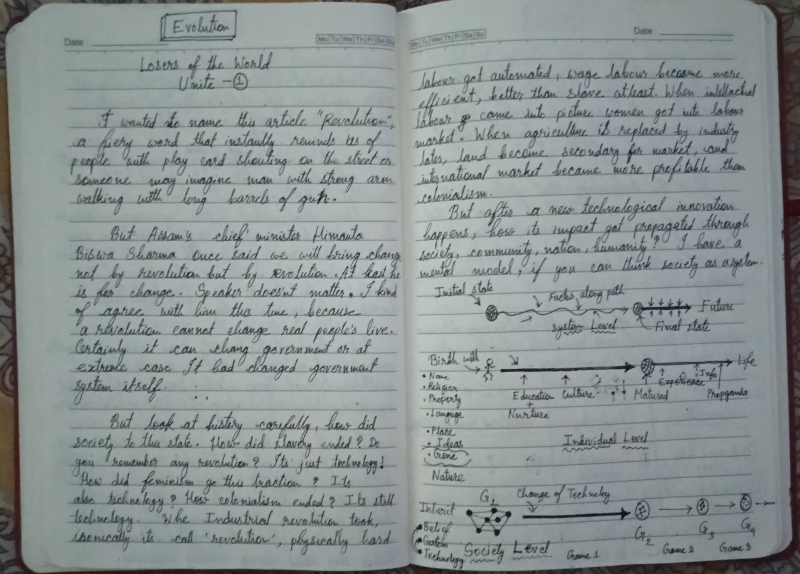

EVOLUTION
Losers of the World Unite — (1)
A revolution cannot change real people's lives; it changes governments. Evolution is the silent mutation of the technological substrate that reorganizes who wins, who loses, and how humanity plays the game.
I wanted to name this article "Revolution", a fiery word that instantly reminds us of people with placards shouting on the street, or someone imagining a man with strong arms walking with the long barrel of a gun.
But Assam’s chief minister Himanta Biswa Sarma once said we will bring change not by revolution, but by evolution. At last, he is for change. Speaker doesn’t matter—I kind of agree with him this time, because a revolution cannot change real people’s lives. Certainly it can change a government, or in an extreme case, it had changed a government system itself.
But look at history carefully: how did society get to this state? How did slavery end? Do you remember any revolution? It’s just technology!
How did feminism gain its traction? It’s also technology! How did colonialism end? It’s still technology. When the Industrial Revolution took place (ironically called a "revolution"), physically hard labour got automated. Wage labour became more efficient and scalable, far better than slave effort at least.
When intellectual labour came into the picture, women entered the labour market. When agriculture was replaced by industry later, land became secondary for the market, and international markets became far more profitable than colonial subjugation.
But after a new technological innovation happens, how does its impact get propagated through society, community, nation, and humanity?
I have a mental model, if you can think of society as a system operating across multiple interconnected scales:
Now consider the Individual Level. An individual does not enter the world as a blank canvas without inertia. We arrive with innate baseline endowments: genes, family name, religion, language, and geography.
As the individual moves along the timeline of life, education and culture mold the baseline endowments into maturity. From there, raw experience, informational exposure, and societal propaganda steer the vector of their trajectory.
At the Society Level, every generation inherits a baseline of beliefs, customs, and existing tools. But whenever a fundamental Change of Technology occurs, the entire playing field shifts.
Society evolves as a progression from one game to the next: from Game 1 to Game 2, Game 3, and forward into the future. Each technological era rewrites the rules of success, altering what it takes to survive, gain status, and thrive.
“A revolution cannot change real people’s lives. It can change a government; technology changes the game.”
